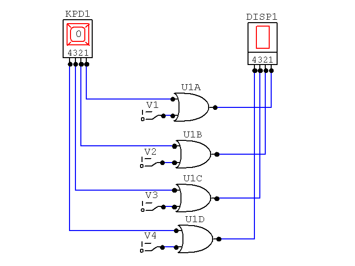

Send the answers to the following questions to me by email by midnight on the Due Date. The Subject line of your mail must say, "CSCI-343 Assignment 2" and your mail must start with your name and ID number.
Do not send me a Word document. Just send me a plain email message with your answers in it. (If you do prepare your answers using a word processor, copy your answers from the document and paste them into your email message.)
My email address, vickery@qc.edu is working again now.
Compute the GPA for a student who has the following grades:
| Grade | Credits |
|---|---|
| A+ | 6 |
| A | 33 |
| A- | 20 |
| B+ | 19 |
| B | 24 |
| B- | 12 |
| C | 6 |
The GPA is calculated to three decimal places. Why not two or four places instead?
A program exectutes 1,500,000 instructions when it is run. Of these instructions, 20% require 500 picoseconds to execute, 30% require 800 picoseconds to execute, and the remainder require 1.2 nanoseconds to execute.
A) What is the average execution time per instruction in nanoseconds?
B) What is the average execution time per instruction in picoseconds?
C) What is the average execution time per instruction in seconds? (Write this out as a decimal number with no exponent.)
D) What is the total execution time for the
program?
Scale your answer so the value part is between 1 and
999, and use the proper unit of measure in your answer.
What is the period of a 750 MHz clock signal?
Scale your
answer so the value part is between 1 and 999, and use the proper
unit of measure for your answer.
What is the frequency of a clock signal with a period of 250
picoseconds?
Scale your answer so the value part is between 1 and 999, and use
the proper unit of measure for your answer.
To make a CD recording, the sound level is sampled at a rate of 44 KHz with a resolution of 1 part in 4096. There are two audio channels.
A) How many bits per sample must be recorded?
B) How many bytes must be stored to record one minute of music?
Each pixel on a computer monitor can display any of 256 different intensities of red, 256 intensities of green, and and 256 intensities of blue. This monitor has a resolution of 1600x1200 pixels, and a refresh rate of 80 Hz.
A) How many bits have to be stored for each pixel?
B) How big must the display buffer be to hold one complete image for the monitor screen? Express your answer in bytes, kilobytes, and megabytes.
C) How much time do the electron beams spend at each pixel position on each refresh cycle? Give your answer in nanoseconds. Ignore the time the beams spend moving from scan line to scan line and from the bottom of the screen to the top.
A certain computer can have up to 2 GB (gigabytes) of memory. How many bits must be used for a memory address for this amount of memory? Assume this is a byte-addressable memory.
If you have not already done so, download and install the CircuitMaker software on your PC. Click on this link to get to a web page that gives you a link for downloading the program and instructions for using it.
Assemble and simulate the circuit below using CircuitMaker. You can find all the devices in this circuit (Hex Keypad, Hex Display, Digital Switches, and 2-input OR gates) on the Hotkeys menu.
Use the Discussion Board for the course if you have any problems using CircuitMaker for this assignment.
You will receive up to three extra credit points for the course if you ask and/or answer questions on the Discussion Board. The more you use the board and the better the quality of your questions and answers, the more points you can earn.
But just giving the answers to homework questions will subtract from your extra credit points!

Attach your .ckt file to your mail message when you submit this assignment, and answers the following questions in your message body: